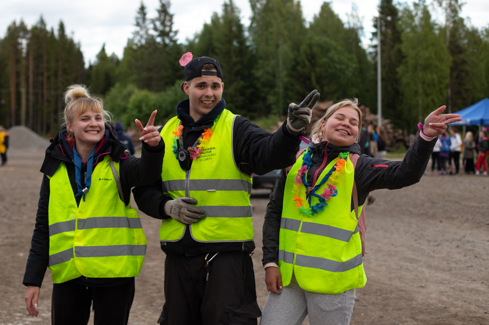
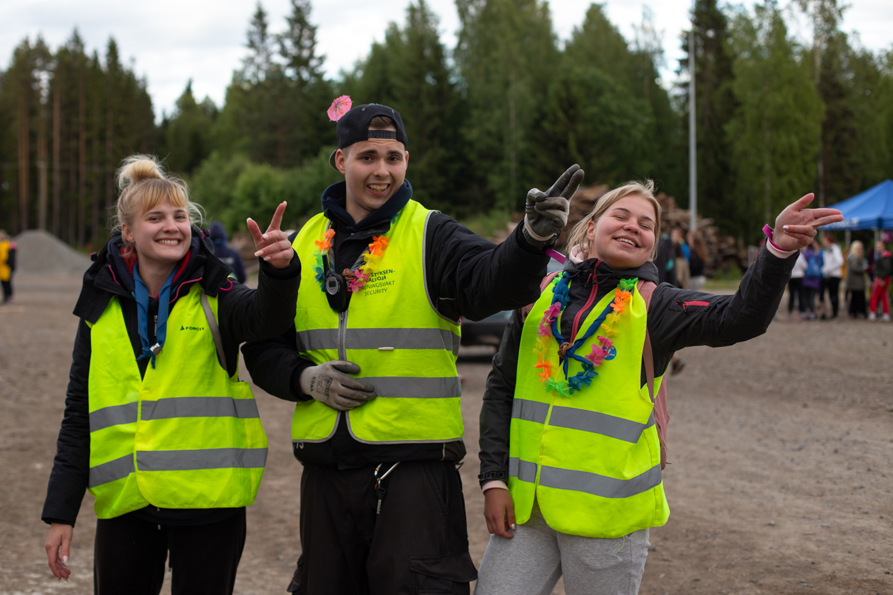
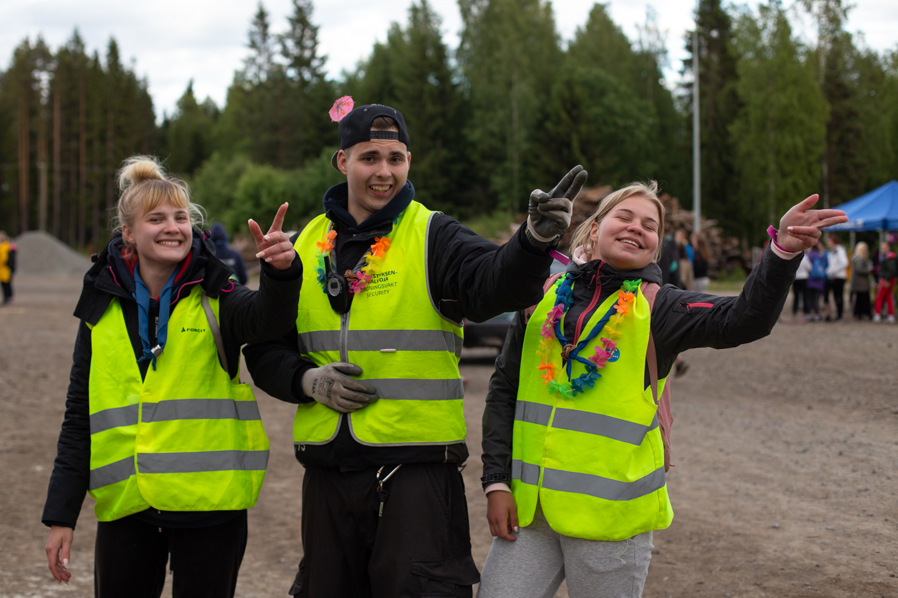
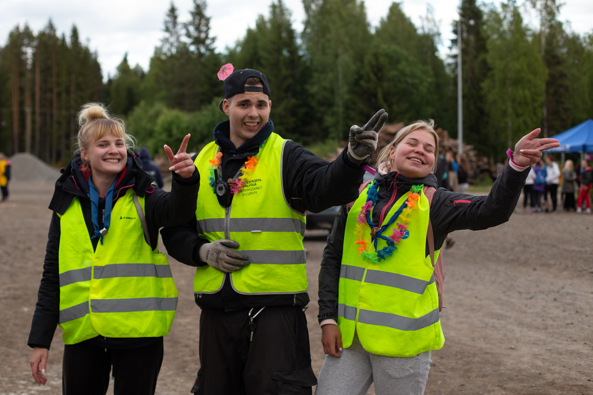

Nykyisessä partio-ohjelmassa on viisi ikäkautta, joille on oma partio-ohjelma, ja näiden lisäksi yli 23-vuotiaat partiolaiset määritellään partio-ohjelman mukaan aikuisiksi. Jokaisella ikäkaudella on oma tunnusvärinsä, ja
Sudenpentuihin kuuluvat kaikista nuorimmat partiolaiset. Sudenpentuihin kuuluvat partiolaiset ovat 7-9-vuotiaita. Sudenpennuilla ryhmän toiminnassa tutustutaan monenlaiseen partioon kuuluvaan tekemiseen, ja toiminta tapahtuu vahvasti aikuisen ohjaamana. Sudenpentujen suorittamia merkkejä kutsutaan jäljiksi ja sudenpenturyhmää kutsutaan laumaksi.
Seikkailijaikäkauteen kuuluvat 10-12-vuotiaat partiolaiset. Ohjelman ytimenä on harjoitella vartiona toimimista ja perusretkeilytaitoja. Toiminta on edelleen aikuisen ohjaamana, mutta toimintaan kuuluu pienten johtamistaitojen harjoittelua aikuisen opastamana. Seikkailijaikäkauden merkit ovat nimeltään ilmansuuntia, ja seikkailijoiden tunnusväri on oranssi.
Tarpojat ovat 12-14-vuotiaita, ja toimivat viikkotoiminnassaan vartioittain samoajaikäisten ohjaamina. Ikäkauteen kuuluu yhä enemmän vastuun ottamista omasta toiminnasta, mutta ryhmän toimintaa ohjaavat ryhmänjohtajat ja ikäkauden aikuinen luotsi. Tarpojien ikäkauteen kuuluu tarppo-merkkien suorittamista.
Samoajat ovat 15-17-vuotiaita, ja samoajien ohjelmia kutsutaan taskuiksi. Usein samoajaikäisinä aloitetaan ryhmänjohtaminen, ja käydään ROK-ryhmänohjaajakoulutus. Samoajat osallistuvat usein suurempiin koko Suomen samoajille tarkoitettuihin tapahtumiin, kuten Samoajaexploon, joka järjestetään seuraavan kerran syksyllä 2023.
Vaeltajat ovat 18-23-vuotiaita partiolaisia, ja vaeltajien toimintaan kuuluu usein pestejä, kuten nuorempien ikäryhmien johtamista omassa lippukunnassa. Tässä ikäkaudessa toiminta ei ole enää välttämättä viikottain omassa ryhmässä tapahtuvaa.
Aikuisena partiossa voi tehdä erilaisia vapaaehtoistehtäviä lippukunnissa, piireissä ja erilaisissa projekteissa, kuten leireillä ja retkillä. Aikuisilla on mahdollisuus kouluttautua ja osallistua suurtapahtumiin, kuten Johtajatulille.